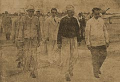

|
j
a v a s c r i p t |
July 19, 1944
Tribune on the loss of Saipan: "Tremendous losses inflicted against foe on Saipan Island.... Nippon defenders made gallant last charge on invaders, fighting to the last man." Lieutenant General Yoshitsugu Saito, Rear Admiral Takehisa Tsujimura and Vice-Admiral Chuichi Nagumo, "highest commander of the Japanese Force in the region," all died there. The second article gives an almost day-to-day account of the struggle — a great tale of true heroism and needless sacrifice.

Guinto welcoming Ba Han yesterday
"Co-prosperity realized, says Burma visitor" — Ba Han, Minister of State and head of the Burma Special Research Commission. "100 Looters Sentenced by Court Martial; 8 given death penalty." Their total haul was amazing. Mariano Cruz and Isidoro Santos stole "for Lt. Col. Blackie" of the ROTC guerrillas. Commentator on the loss of Saipan: "It is but a decoy — a sacrifice cattle in the big tiger hunting game." He lists large losses for the U.S. and calls it a "tactical defeat," but admits the taking of the island was an American "strategical success." Conclusion: "A draw"! Definite news of the fire last Sunday: the Japanese lost the ship, the lighter that had just tied itself to it, some boxes of ammunition and 5,000 drums of aviation fuel! |
|
|
|
|